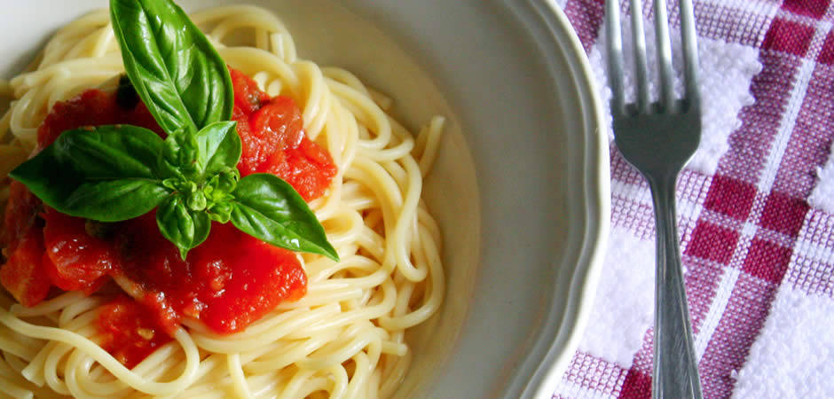

Pasta al Sugo

Description
The simple Italian pasta dishes are often the best.
Serves 4
Ingredients
- 2 Tablespoons extra virgin olive oil
- 1 onion, minced
- 1 garlic clove
- 1 carrot, diced
- 1 1/2 teaspoons salt
- 1 (400g) tin peeled tomatoes
- 400g pasta
- grated Parmesan cheese
- Cayenne pepper
Steps
Prep:10min › Cook:40min › Ready in:50min
- Heat a oil in a pan over medium-low heat, add the onion and whole garlic and fry till yellow, about 4 minutes, turning often.
- Remove garlic. Add the carrot and salt.
- Add tomatoes and continue to cook over medium-low heat. Leave to cook, partially covered, for about 25 minutes, stirring frequently to prevent the sauce from sticking.
- Cook the pasta in salted water following packet instructions. Drain and toss with sauce, adding a little olive oil. Serve with Parmesan and a pinch of cayenne pepper.